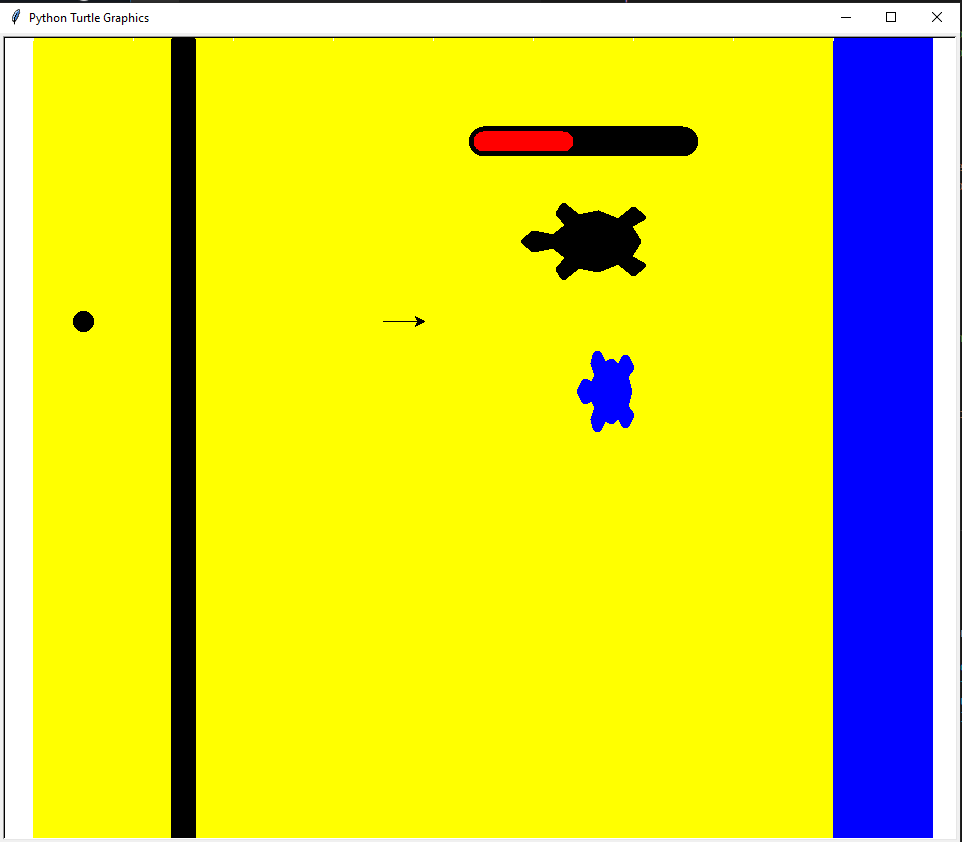

This is my Portfolio Page!
1.1.9 Project

T-DAY is a competitive wall defense simulator with varying turtle sizes and waves. You play as Sergeant Katrovski, defending the Eastern Front in Romania from the Floridian turtle invasion. How long will you survive?
1.2.5 Project - Turtle Breakout
Scratch Project
Zombie survivor game made in Scratch. The goal is to survive as long as possible and make it into the boss chamber
Honey Data Analysis.

We created an algorithm to cleanse and graph the honey production data from several different states.
4.1.4 Project
We analyzed a NetLogo simulation about natural selection and bacteria, and made a slide deck about it.
3.1.6 Project.
In this project, we analyzed a stream of data in order to figure out where our rover is on an alien planet.